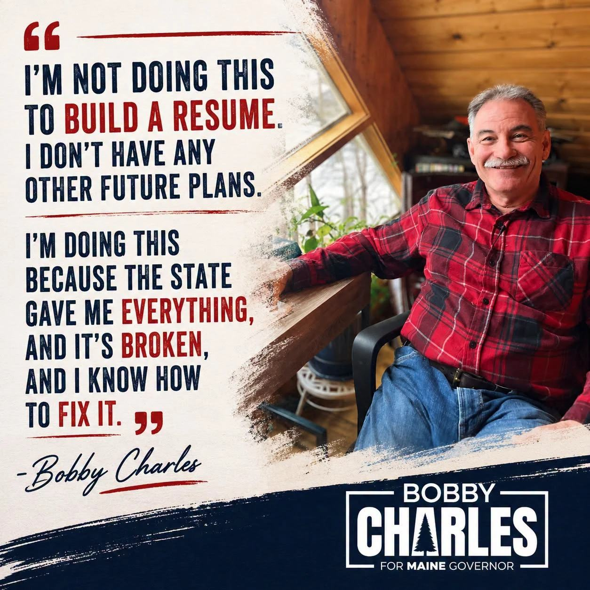

Archivo / Video político / N.º 02
Bobby Charles

Ficha N.º 02
Bobby Charles for Maine Governor
- Cliente
- Harris Media Group · Bobby Charles for Maine Governor
- Mi rol
- Edición, motion graphics y grabación
- Año
- 2026
- Herramientas
- Photoshop, Premiere Pro, After Effects
Video, motion y diseño para redes de la campaña de Bobby Charles a gobernador de Maine.
Una línea gráfica de campaña en azul marino, rojo y blanco: frases cortas en tipografía condensada, retratos del candidato y comparaciones directas.
Más de veinte piezas producidas entre video y gráficas: Cut crime, Cut taxes, Not a career politician y The choice is clear.
436K+vistas de video
+20piezas producidas
20K+interacciones en redes
